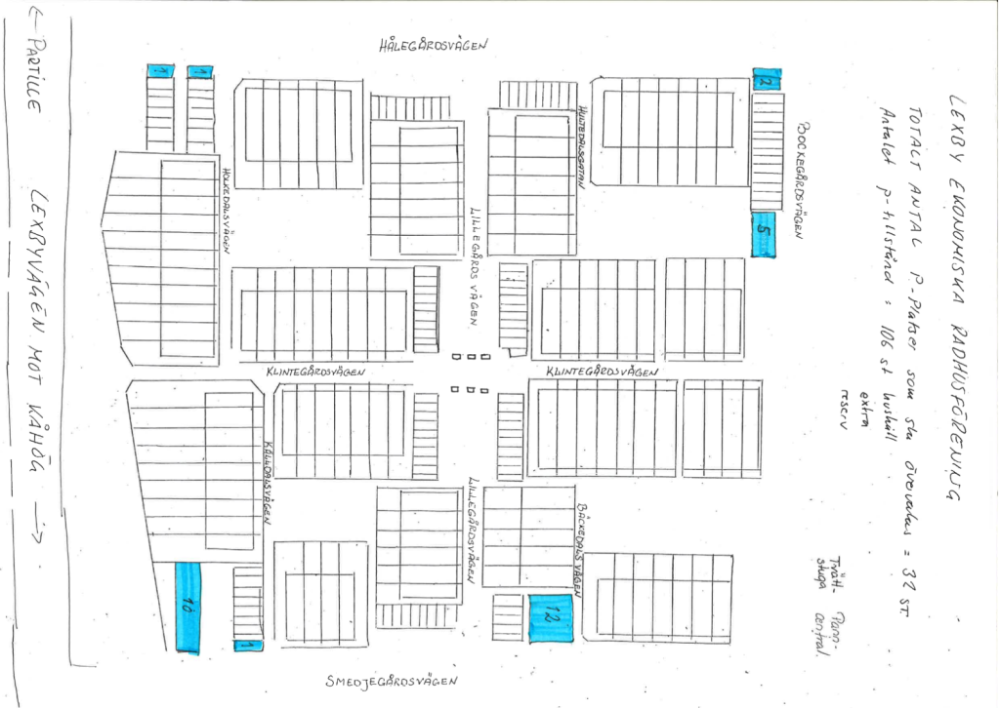

Allmänn information
Måla om
Det står varje enskild husägare fritt att måla om sitt hus. Det är dock viktigt att husets färg
inte avviker för mycket från de omgivande husen. Om du vill måla om så väljer du med fördel en
färg som matchar mot grannarnas hus så långt det är möjligt. Det är också trevligt att informera
sina grannar att man tänker måla om. När det gäller förråden så står det i föreningens
ordningsregler att de ska vara vitmålade mot gatan för att skapa ett enhetligt intryck.
Det finns ett antal stegar i varierande längd varav en är av typen målarstege med plattform i
lagom höjd för våra hus, stegarna finns på östra gaveln till garagelängan
Hålegårdsvägen/Holkedalsvägen.
Bygga om
Om du vill bygga om förråd eller hus så att de avviker från ursprungsplanen så behöver du söka bygglov hos kommunen.
Gemensamt staket/häck med grannen
Om det finns en gemensam häck eller staket mellan din och grannens fastighet så är det viktigt
att ni kommer överens om eventuella ändringar av dessa. Det kan vara så att tidigare ägare delat
på kostnaden för staket/häck och då är det viktigt att alla förändringar diskuteras innan man
gör något.
Har du andra funderingar och frågor som rör ditt boende och de gemensamma ytorna är du välkommen
att kontakta oss i styrelsen.
Fjärrvärme
Fjärrvärmen är direktansluten från Partille Energi. Felanmälan och frågor ställs till: Partille Energi.
Garagen
Motorvärmare
Om man önskar använda motorvärmare i garaget under den kalla årstiden så ska detta anmälas till styrelsen senast den 30 november.Kupévärmare
Kupévärmare är förbjudet att använda i garagen, enligt beslut på årsstämman 2013.Förvaring i takkonstruktion
OBS! Totalförbud för material hängandes i takkonstruktionen.Portautomatik till garageportar
I de fall det finns portautomatik på garageporten, då är det medlemmens ansvar att den är porten är låst och fungerar. Om portautomatiken inte fungerar som den är avsedd att göra, då är medlemmen skyldig att omedelbart åtgärda eventuella fel. Portautomatiken är motorn och tillhörande kedja för att öppna och stänga porten. Föreningen ansvarar för portar i sin helhet utan portautomatik, samt garageporten och upphängningen i de fall portautomatik är monterad.Krypgrund
Föreningen ansvarar ej för skötsel och inspektion av krypgrunderna. Detta ansvar ligger på respektive länga och förslagsvis genomförs inspektion i samband med gemensamma städdagar.
Parkering
Parkeringstillstånd: Fr.o.m. 2017-10-01 har vi ett nytt avtal med Controlla för övervakning av parkering och området i övrigt. Alla hushåll får två tillstånd. Om fler behövs – vänd er till styrelsen@lexbyradhus.se eller kontakta Henrik Glennvall. Ritning nedanför är en översikt över våra parkeringar i området som kräver parkeringstillstånd.
Bredband och telefoni
Styrelsen har enligt beslut på extra årsstämma 2013-04-29 ingått ett s.k. gruppavtal med Tele2. Avtalet började gälla från och med 2014-05-01. I avtalet ingår: Bredband XXL 100 inkl. trådlöst modem (50-100/10 Mbit/s). Telefoni grundabonnemang (Obs! ej samtalsavgifter) Digital-TV Medium 8 favoriter (SVT 1, 2, TV24, Barn & Kunskapskanalen, TV4, TV6 + 8 valbara kanaler inklusive Box). Kostnaden för ovan nämnda tjänster blir för föreningen ca 190 kr/mån/fastighet. Kostnaden kommer att debiteras via månadsavgiften. För bredband och TV finns möjlighet att uppgradera individuellt genom beställning hos Tele2. Frågor om detta kan ställas till styrelsen
Städdagar
Gemensam städdag sker 2 gånger per år, vår och höst. Då skall alla gemensamma ytor och ägodelar städas och underhållas. Om dessa dagar ej räcker till, t ex för garagen, kan man bli tvungen att ta till en extra dag. Detta enligt årsmötesbeslut 2001. Styrelsen ombesörjer att container finns i området inför varje städdag. Dessa är i första hand avsedda för föreningens gemensamma trädgårdsavfall, och inte för den enskilde fastighetsägarens samlingar. Observera att endast trädgårdsavfall får läggas i containrarna! I samband med vårstäddagen brukar Renova ha en dag då man hämtar upp skräp utanför fastigheten. Det är av största vikt att man håller sig till Renovas normer och inte ställer ut sånt som dom inte tar med sig. Risk finns för att det blir ståendes skräp på gatan som ingen tar hand om. Inför denna städdag skall Renovas information tas på största allvar och läsas noggrant.
Verktyg att låna
öreningen äger en del enklare trädgårdsredskap. Du som medlem får självklart låna detta, kontakta styrelsen för utlåningsinformation.